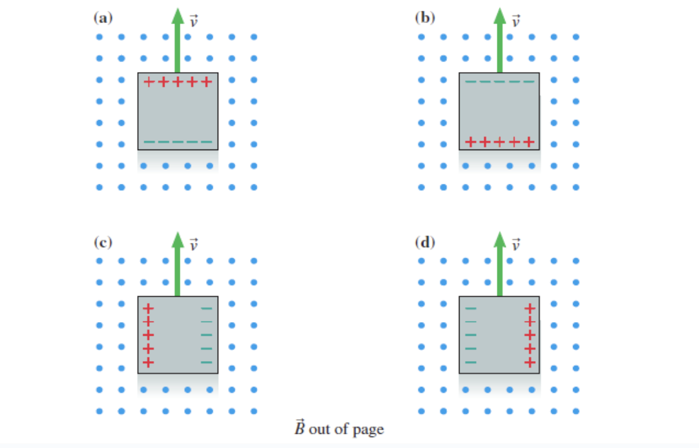

Lecture 12: Electromagnetic Induction#
Learning Objectives#
By the end of this lecture you should:
Be able to define electromagnetic induction, magnetic flux and magnetic flux linkage.
Be able to state Faraday’s and Lenz’s law and use them to calculate the induction in a coil.
Electromagnetic Induction#
Electromagnetic induction is the process of generating a current by time-varying a magnetic field - this is Faraday’s Law.
An induced current is the current that results from a changing magnetic field. This is not caused by a battery - this is a new way to generate a current! A current can be induced in two ways:
By changing the magnetic field through a stationary circuit.
By moving the circuit orientation in a stationary magnetic field.
The currents produced by electromagnetic induction are the same as those produced by batteries, just created in a different way. The effect that induces current may also be referred to as motional emf. The gif below shows how a current can be induced by a change in magnetic flux using a bar magnet.

Motional EMF#
Motional EMF occurs when a conducting material is moved within an external magnetic field. The charge carriers in the conductor will experience a magnetic force and begin to move:
\( F_B = Bqv. \)
This results in a seperation of positve and negative charges across the material (it becomes polarised) which results in an electric field being induced across the material. The magnitude of the E-field will increase until it is large enough to balance the magnetic force driving the movement of charge carriers. The potential difference across the system is calculated using:
\( \Delta V = \epsilon = vlB, \)
where \(v\) is velocity, \(l\) is length and \(B\) is the magnetic field. This process is shown in the figure below:

If a circuit is moved within a stationary magnetic field, motional EMF will be generated which will induce current in the circuit.The conductor in the previous example had an EMF induced across it, but could not sustain a current as the charges had nowhere to go. This moving conductor can be incorporated into a circuit - negating the need for a battery to drive current!
Assuming that the internal resistance of the wires is \(R\), the current can be calculated as:
\(I = \frac{\epsilon}{R}, \)
\( I = \frac{vlB}{R}. \)
The current in the wire is induced by the changing magnetic field, and as a current is simply a series of moving charges - the current itself induces its own magnetic field! Using right-hand-rule 2, the direction of the induced magnetic field can be determined to be opposite to that of the initial magnetic field. The induced magnetic field is shown using the purple spots on the figure below:
Magnetic Flux and Flux Linkage#
Faraday found that a current is induced when the ‘amount of magnetic field’ passing through a coil or a loop of wire changes. What is the ‘amount of magnetic field’ passing through the wire? To answer this we must define a new term: the magnetic flux \(\Phi_B\).
If the cross-sectional area of the circuit above intercepting the magnetic field increased, more of the magnetic field would pass through the wire. Thus magnetic flux is the amount of a magnetic field passing through the cross-sectional area of a loop:
The mathematical expression for magnetic flux is written as:
\( \Phi_B = \vec{B} \cdot \vec{A}, \)
where \(\cdot\) indicates that we are taking the vector dot product of the two vectors \(A\) and \(B\). In this expression \(A\) is the area vector, which is simply a vector with a direction perpendicular to the plane of the area intersecting the magnetic field. The magnetiude of the area vector is proportional to the area itself. The expression above can also be written as:
\( \Phi_B = |\vec{B}||\vec{A}| \cos{\theta}, \)
where \(\theta\) is the angle between the vectors \(A\) and \(B\). The reason for using the vector dot product becomes apparent when this stystem is visualised as below:

In the figure above, we see that by taking the cosine of angle between the two vectors, we are actually determining the projection of one of the vectors onto the other. This means that when the two vectors are perfectly aligned (i.e. the area vector is fully projected onto the magnetic field vector), there will be maximum flux as the entire area is being intersected by the magnetic field lines. If on the otherhand the area vector was perpendicular to the magnetic field lines, there would be no flux as none of the area is being intersected by the field lines.
When we have multiple loops in one wire (i.e. a solenoid), we can define the magnetic flux linkage as the magnetic flux through a coil of area A multiplied by the number of turns \(N\) of the coil.
Important
The magnetic flux, \(\Phi_B\) can be calculated by taking the vector dot product of the area vector \(A\), with the magnetic field \(B\):
\( \Phi_B = \vec{B} \cdot \vec{A} = |\vec{B}||\vec{A}| \cos{\theta}. \)
Magnetic flux has units of Webber (\(Wb\)) which is equivilent to \(T \, m^2\). Magnetic flux linkage for a solenoid can be calculated as:
\( \text{Flux linkage} = N \Phi_B = N \left(B \cdot A \right). \)
Faraday and Lenz’s Law#
In our previous examples, the motional emf has been attributed to magnetic forces, but it was also discovered that a current will be induced if a stationary loop of wire is placed within a changing magnetic field. Magnetic forces cannot explain why stationary charges in the loop begin to move. Their motion must be being driven by an electric force. If there is an electric force, there must be a net electric field! A changing magnetic field induces an “induced” emf which produces an electric field and drives current. This electric field is established by a change in the magnetic field, rather than by charges.
This brings us onto the formal definition of Faraday’s law that states “the induced emf in an conductor is equal to the rate of change of the magnetic flux”. This can be written mathematically as:
\( \epsilon = \int \vec{E} \cdot d\vec{l} = - \frac{\Delta \Phi_B}{\Delta t}.\)
Warning
The following derivation is provided to bolster your understanding, but there is no need to memorise it for your exams.
With reference to the figure below, let us now consider where the expression for the motional EMF, \(\epsilon = vlB\), came from using Faraday’s law. First let us write the equation above in terms of the magnetic field and area vectors:
\( \epsilon = \frac{\Delta \left(\vec{B} \cdot \vec{A}\right)}{\Delta t},\)
If the magnetic field remains constant and acts perpendicularly to the motion of the wire, the change in flux is only attributed to the change in area of the circuit, therefore:
\( \epsilon = \frac{\vec{B} \Delta \vec{A}}{\Delta t},\)
The change in area can be calculated multiplying the length of the wire by the distance it has moved horizontally, which itself can be determined using displacement = velocity \(\times\) time, therefore:
\( \epsilon = \frac{\vec{B} \left(vl \Delta t\right)}{\Delta t},\)
which can be simplified to:
\( \epsilon = vlB.\)
Note of Interest
It is worth noting that changing electric fields also induce magnetic fields! (More on this next year). Maxwell soon realized that it might be possible to establish self-sustaining electric and magnetic fields that would be entirely independent of any charge or currents.
The changing electric field E, creates a magnetic field B, which then changes in the just the right way to recreate the electric field, which then changes in just the right way to again recreate the magnetic field. The fields are continually created through electromagnetic induction without any reliance on currents or charges. This process is described using two of Maxwells’s equations (which you will meet formally next year):
\( \oint \vec{E} d \vec{l} = - \frac{d}{dt} \int \vec{B} \cdot d\vec{A}, \)
and
\( \oint \vec{B} d \vec{l} = \mu_0 \epsilon_0 \frac{d}{dt} \int \vec{E} \cdot d\vec{A}. \)
Referring back to Faraday and Lenz’s law, it is important to understand the significance of the minus sign. This is attributed to Lenz’s law, which states: if an induced current flows, the direction of flow is always such that it will oppose the change in flux that produced it.
Let us consider what this actually means using the figure below:

For the image on the left, as the bar magnet approaches, there is an increase (change) in the magnetic flux in the wire loop. This change in flux induces An emf within the wire according to Faraday and Lenz’s law.
The induced emf will drive a current that induces a magnetic field that opposes the change in flux - this magnetic field will point in the opposite direction to subtract from the increasing downward field!
If the the induced magnetic field is pointing upwards then the current will flow counter clockwise (RHR2 - thumbs up!)
For the image on the right, as the bar magnet moves away from the loop, the magnetic flux decreases, but this is still a change in magnetic flux. The induced magnetic field will now oppose the change in flux by contributing towards the diminishing downward field.
As the induced magnetic field is pointing downwards, the current must be flowing clockwise.
If the change in flux is increasing (\(\frac{dB}{dt}\) positive), the induced emf will be negative, but if the change in flux is decreasing (\(\frac{dB}{dt}\) negative), the induced emf will be positive.
The emf induced by a changing magnetic field is essentially driven by a conservation of energy:
If the change in flux induced a current in the direction opposite to what we observe, then the direction of the induced magnetic field would also be opposite to what we observe.
This would mean that a positive change in flux would induce a current that in turn induces a magnetic field that further adds to the positive change in flux.
This positive flux would perpetually increase as would the magnitude of the induced current, which clearly violates the principle of conservation of energy.
Important
Faraday’s law states that the induced emf in an conductor is equal to the rate of change of the magnetic flux.
Lenz’s law states that if an induced current flows, the direction of flow is always such that it will oppose the change in flux that produced it.
Expressed mathematically, Faraday and Lenz’s law is expressed as:
\(\epsilon = \frac{\Delta \Phi_B}{\Delta t}, \)
where
\(\Phi_B = \vec{B} \cdot \vec{A}.\)
Questions#
Warning
Atempt the questions before looking at the solutions otherwise you will not learn!
Students who look at mark schemes without going through the motions of a question often think “yes, that’s what I would have done”, but are then unable to perfom on exams as the knowledge was never consolidated through practise.
Note
Units have been omitted in calculations below for simplicity. Ensure you know what each value represents.
Question 1#
A square conductor moves through a uniform magnetic field. Which of the figures shows the correct charge distribution on the conductor?
Q1 Hint
Use right hand rule 1!

Q1 Solution
The magnetic field lines in this image are coming out of the page. This means that if we use right-hand-rule 1 and orient our hand so that our index finger (B-field) is pointing out of the page, and our thumb (velocity) is pointing upwards, our middle finger (force on positive charge) is pointing to the right. Therefore the electrons will move left leaving an area of positive charge on the right establishing a horizontal electric field.
Option “d” is therefore the correct answer.
Question 2#
A uniform \(2.00\,T\) magnetic field, \(\vec{B}\), permeates through a rectangular cross section (\(2.00\,m\) by \(3.00\,m\)). The area vector, \(\vec{A}\), is at an angle of \(30.0°\) to the magnetic field lines.
a) Calculate the magnetic flux.
b) Calculate the magnetic flux if the cross section was replaced with a circle with radius \(r = 0.50\,m\).
c) Calculate the magnetic flux if the angle between the area vector and the magnetic field became \(90°\).
Q2a Solution
It is useful to sketch what this stystem actually looks like:
To calculate the flux we simply use the flux equation:
\( \Phi_B = \vec{B} \cdot \vec{A}, \)
\( \Phi_B = |\vec{B}||\vec{A}|\cos{\theta}, \)
In this example the magnitude of the area vector is simply the area of the rectangular cross-section:
\( |\vec{A}| = 2 \times 3, \)
\( |\vec{A}| = 6 \, m^2. \)
Thus the flux is calculated as:
\( \Phi_B = 2 \times 6 \times \cos{30} \)
\( \Phi_B = 10.4 \, Wb.\)
Q2b Solution
This problem is exactly the same as above, bar the fact that the area of the cross-section has now changed:
In this example the magnitude of the area vector is simply the area of the rectangular cross-section:
\( |\vec{A}| = \pi r^2, \)
\( |\vec{A}| = \pi \left(0.5\right)^2, \)
Thus the flux is calculated as:
\( \Phi_B = 2 \times \pi \left(0.5\right)^2 \times \cos{30} \)
\( \Phi_B = 1.36 \, Wb.\)
Q2c Solution
If the two vectors are perpendicular, and the area vector is perpendicular to the cross-section, this means that there are no longer any field lines intersecting it:
Thus the flux is calculated as:
\( \Phi_B = \vec{B} \cdot \vec{A}, \)
\( \Phi_B = |\vec{B}||\vec{A}|\cos{\theta}, \)
\( \Phi_B = |\vec{B}||\vec{A}|\cos{90}, \)
As \(\cos{90}=0\), there the flux is equal to \(0\, Wb\), which agrees with expectation when looking at the diagram.
Question 3#
This question is taken from a textbook. Read the question carefully before answering.
Q3 Solution
In this example, we also need to determine the angle between the area vector and the direction of the B-field as an additional step. It is otherwise the same as above: